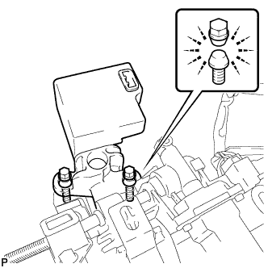

STEERING COLUMN ASSEMBLY > REASSEMBLY |
| 1. INSTALL MULTIPLEX TILT AND TELESCOPIC ECU |
Install the ECU with the bolt.
Connect the connector.
| 2. INSTALL STEERING LOCK ACTUATOR ASSEMBLY |
Temporarily install the steering lock actuator assembly with 2 new tapered-head bolts.
|  |
Tighten the 2 tapered-head bolt until the bolt heads breaks off.